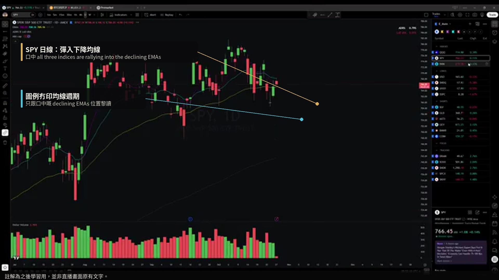
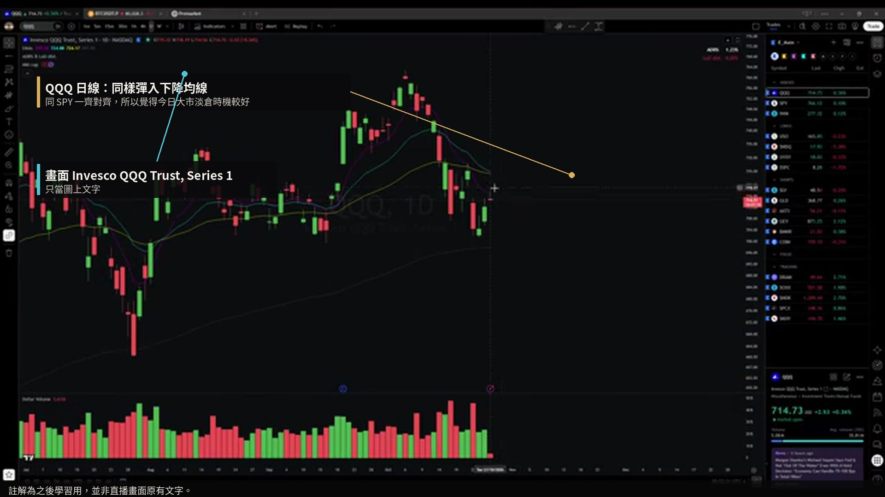
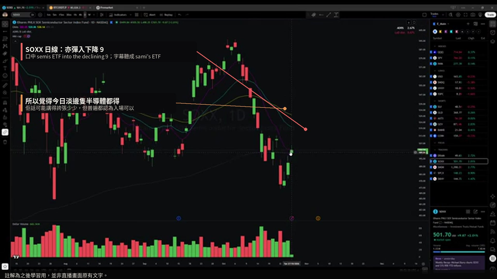

概要
大市同板塊同一時間對齊
32:33 佢把 NBIS 嘅讀法拉闊到大市：覺得今日整體淡倉時機都幾好，因為三個指數都彈入下降 EMAs，半導體 ETF 亦彈入下降 9。所以覺得今日淡邊隻半導體都得；又話可能講得誇張少少，但普遍都認為入場可以。
呢一段畫面見到 SPY、QQQ 日線同 SOXX 日線。口中「all three indices」，呢段未清楚見到 IWM。字幕把 semis ETF 聽成 sami's ETF。
圖一
SPY 日線：彈入下降均線
直播 32:44

原話
I think today we got a really good short timing. I think today's a really good short timing for the general market as well. The all three indices are rallying into the declining EMAs, so all things aligned.
我覺得今日有一個好好嘅淡倉時機。我覺得今日對整體大市嚟講，都係好好嘅淡倉時機。三個指數都彈入下降中嘅 EMAs，所以所有嘢都對齊咗。
點樣讀
「all things aligned」係指指數一齊行入下降均線，而唔係另有一套未講嘅條件清單。
口中 all three indices；呢幾秒畫面係 SPY 同隨後嘅 QQQ，未清楚見到第三個指數。
圖二
QQQ 日線：同樣彈入下降均線
直播 32:47

點樣讀
QQQ 同 SPY 一齊用，係為咗核對「指數都彈入下降均線」呢句。
畫面寫住 Invesco QQQ Trust, Series 1，只當圖上文字。圖例冇印週期。
圖三
SOXX 日線：亦彈入下降 9
直播 32:56

原話
And also semis ETF into the declining 9 as well. So to me, I think if you're shorting any semis, that would be a good entry. Maybe it's a little bit exaggerated, but I generally believe, like, just pick any semi stocks to short today. I think they are all good entries.
而且半導體 ETF 亦彈入下降中嘅 9。所以對我嚟講，如果你淡任何半導體，都會係一個好入場。可能講得誇張少少，但我普遍都相信，今日淡邊隻半導體都得。我覺得佢哋全部都係好入場。
Whisper 把 semis 聽成 sami's／samis／semi stops。畫面係 iShares PHLX SOX Semiconductor Sector Index Fund（SOXX），以畫面為準。
點樣讀
「pick any semi stocks」係當時對板塊位置嘅概括，佢自己都話可能誇張少少。唔好當成每隻半導體都有同一規則。
9 EMA 以口中為準，圖例冇印週期。
附註
注意事項
- 口中 all three indices，呢段清楚見到 SPY 同 QQQ；IWM 要到直播後段先獨立出圖。唔擅自補一張當時未定影嘅 IWM。